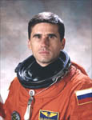

Lyndon B. Johnson Space Center
Houston, Texas 77058
|
National Aeronautics and Space Administration Lyndon B. Johnson Space Center Houston, Texas 77058 |
 |
Biographical Data |
||
Yuri Ivanovich Malenchenko
(Colonel, Russian Air Force)
Test Cosmonaut Instructor Of The
YU.A. Gagarin Cosmonaut Training Center
PERSONAL DATA: Born December 22, 1961 in Svetlovodsk, Kirovograd Region, Ukraine.
EDUCATION: Graduated from the Kharkov Military Aviation School in 1983, and from the Zhukovsky Air Force Engineering Academy in 1993.
HONORS: Awarded the Hero of the Russian Federation medal, the National Hero of Kazakhstan medal, Military award of excellence, Meritorious Service medals (3), Commendation medal, Achievement medal, Medal “70 years of the Soviet Armed Forces”.
EXPERIENCE: After graduation from the Military Aviation School, he served as a pilot, senior pilot and multi-ship flight lead from 1983 till 1987 in the Odessa Region. In 1987 he was selected as a cosmonaut, and arrived at the Gagarin Cosmonaut Training Center. From December, 1987 to June, 1989 he underwent a course of general space training. After completion of the course, Malenchenko was qualified as a test-cosmonaut. In September, 1989 – December, 1993 he was taking advanced training courses getting ready for spaceflight. In January-July, 1993 Malenchenko trained as commander of the Mir-14 reserve crew. In July, 1993 – January, 1994 he completed training as a backup commander of the Mir-15 crew. In February – June, 1994 he trained for the Mir-16 mission.
SPACE FLIGHT EXPERIENCE: Malenchenko completed his first 126-day spaceflight in July 1 – November 4, 1994 on the Soyuz TM-14 vehicle and the Mir station (Mir-16 mission). The mission included spaceflight of Ulf Merbold, an ESA astronaut as part of the EuroMir program. Malenchenko completed two spacewalks that lasted 11 hours and 7 minutes total. He performed the first manual docking of the Mir station with the Progress M-24 vehicle in the teleoperator mode. Since October, 1998 till September, 2000 Malenchenko trained at NASA for a Shuttle spaceflight (2A, later 2A.2B).
Malenchenko served on the crew of STS-106 preparing the International Space Station for the arrival of the first permanent crew. The five astronauts and two cosmonauts delivered more than 6,600 pounds of supplies and installed batteries, power converters, a toilet and a treadmill on the Space Station. Yuri Malenchenko and Ed Lu performed a 6 hour and 14 minute space walk in order to connect power, data and communications cables to the newly arrived Zvezda Service Module and the Space Station.
Since January, 2001 he trained as a commander of the ISS 7 prime crew. Malenchenko completed his third spaceflight (with NASA astronaut Ed Lu) as an ISS 7 crew and Soyuz TMA commander. The flight lasted from April 26 till October 27, 2003, with a total duration of 185 days.
From November, 2003 until September, 2005 Malenchenko trained with a group of test-cosmonauts.
From October, 2005 until October, 2006 he trained as a flight engineer of the ISS 14 crew and Soyuz commander.
In October, 2006 Malenchenko started training as an Expedition 16 flight engineer and Soyuz commander. The Expedition-16 crew launched on October 10, 2007 aboard a Soyuz TMA-11 spacecraft, docking with the orbiting space station on October 12, 2007. Malenchenko’s tour of duty aboard the International Space Station totalled 192 days in space, returning to Earth on April 19, 2008 aboard the Soyuz TMA-11 spacecraft.
APRIL 2008